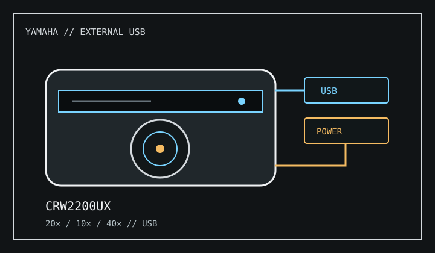

[ CD-R AND CD-RW DRIVES // IDENTIFIED MODEL ]
Yamaha CRW2200UX
External USB CD-R/RW recorder rated 20× CD-R write, 10× CD-RW rewrite and 40× CD read; the UX suffix distinguishes this USB model.

IDENTIFICATION: Do not confuse CRW2200UX (USB) with the internal CRW2200E or IEEE-1394 CRW2200IX. Their cabling and host requirements differ.
Documented specifications
| Exact model | Yamaha CRW2200UX |
|---|---|
| CD-R write | Up to 20× |
| CD-RW rewrite | Up to 10× |
| CD read | Up to 40× |
| Supported media | Writes CD-R and CD-RW; reads CD-ROM, CD-DA and supported CD-R/RW media. Session and specialized-format access depends on the host application. |
| Interface / bay | External USB 1.1 interface in a powered enclosure; no internal PC drive bay or IDE jumper is used. |
| Host compatibility | Requires USB host support and the CRW2200UX-specific Yamaha driver/recording software for the supported Windows or Macintosh versions in its manual. USB bridge detection alone does not guarantee writing or legacy software support. |
| Firmware / jumper | Firmware must match the CRW2200UX and its enclosure revision. There is no internal IDE Master/Slave jumper; use the manual's USB connection, power and driver sequence. Do not flash CRW2200E/IX firmware. |
Compatibility and preservation
- Use the supplied external power arrangement and connect directly to a supported USB host when diagnosing recording errors.
- Log unit suffix, firmware, USB controller, host OS, software, media and verification results.
- Preserve verified disc images and do not treat USB enumeration as evidence that recording utilities will work.
Manufacturer and manual references
- Yamaha CRW2200UX Series owner's manualModel series manual for system requirements, USB setup and specifications.
- Yamaha CRW2200UX owner's manual archiveAlternate archived copy of the UX-specific manual.